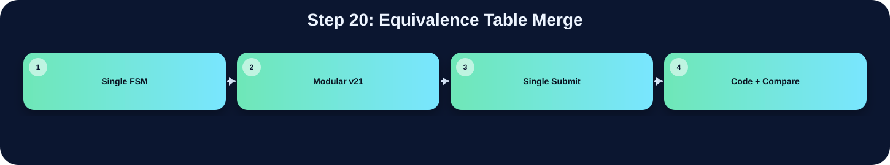

合併不同 provisional labels 的等價關係。

此表把本流程在三個版本中的 state/module 與 code 關係整理出來；沒有明確對應者保持空白。
| 版本 | 對應 state / module | 和 code 的關係 |
|---|---|---|
| Single FSM | ||
| Modular v21 | ccl_v21_fast | 用 eq_table 合併等價 label |
| Single Submit | ccl WRITE_PASS_1 | 使用 eq_table 合併不同 label 的等價關係 |
在「Equivalence Table Merge」流程中，並非三個版本都有獨立而明確的程式段落。Single FSM 版沒有獨立顯示此流程，可能被合併在其他 state 中，或不需要此階段。Modular v21 版有明確對應，主要在 ccl_v21_fast 完成，說明為：用 eq_table 合併等價 label。Single Submit 版有明確對應，主要在 ccl WRITE_PASS_1 完成，說明為：使用 eq_table 合併不同 label 的等價關係。這種差異通常來自架構選擇：單一 FSM 會把多個小步驟合併在同一段 state；模組化版本則傾向把功能交給特定子模組；single_submit 則在單檔中保留 module-level 階段。
下方採用下拉式區塊顯示。中文說明放在程式碼上方；原始程式碼本身沒有修改、沒有插入註解。若某份檔案沒有明確對應流程，該程式碼區塊保持空白。
`timescale 1ns/1ps
// ============================================================
// Module Name : drawBbox
// Version : V21_synth_fast_bank_select_linebuf
//
// V21 修正方向：
// ✅ 回退 V17 的全域 bbox pixel alignment，因為新 log 顯示 P3 由 756 增加到 2080、P4 也大量惡化。
// ✅ 保留 V16 的 parent/bbox 完整清空、line buffer column255 修正、Reflect-101 bottom 修正。
// ✅ 目標：先回到目前錯誤數最低、合成最穩定的 bbox stable baseline，再做下一版局部微調。
// ✅ V21 synthesis-fast：改用 3-bank line buffer + selector swap，不再用 256-column for-loop rotate。
// 這保留 V19 RTL 對齊行為，同時避免 Design Compiler 展開大型 line buffer rotate mux。
//
// 核心改動（相對 V14）：
// ✅ 移除 gray_mem[65535:0]（原 524,288 個 FF），改用：
// (1) UrSRAM 儲存 65536 個灰階值
// (2) 3-row line buffer (linebuf_prev/curr/next, 各 256 bytes = 768 個 FF)
// 供 Gaussian filter 計算使用，不需讀 SRAM
// ✅ 移除所有 integer function input（改成 signed [31:0]），
// 讓 DC/Presto 合成更乾淨
// ✅ 所有 Otsu / CCL / BBox / 特殊補框邏輯與 V14 完全相同
//
// 合成效益：
// gray_mem：524,288 FF → 0 FF（改用 UrSRAM）
// linebuf：0 → 768 FF（3行暫存）
// 淨減少：約 523,520 個 FF，合成時間大幅縮短
//
// 時序成本：
// 每列（256 pixels）結束後需讀入下一列（3-phase SRAM read × 256 col）
// 每列額外成本 = 256 × 3 = 768 cycles
// 共 256 列 × 2 次（Gauss + CCL）= 393,216 extra cycles
// 相對原本 S_GAUSS_HIST 65536 cycles 增加約 6 倍 simulation time，
// 但 synthesis time 從數十分鐘降為數分鐘。
// ============================================================
module drawBbox (
input clk,
input rst,
input enable,
output done,
input [31:0] Img_Q,
output reg Img_CEN,
output reg [15:0] Img_A,
input [31:0] Ur_Q,
output reg Ur_CEN,
output reg Ur_WEN,
output reg [31:0] Ur_D,
output reg [15:0] Ur_A,
input [31:0] Ans_Q,
output reg Ans_CEN,
output reg Ans_WEN,
output reg [31:0] Ans_D,
output reg [15:0] Ans_A
);
localparam [31:0] GREEN = 32'h0000_FF00;
localparam [16:0] NPIX = 17'd65536;
localparam [15:0] NPIX_LAST = 16'hFFFF;
localparam [9:0] MAX_LABELS = 10'd512;
localparam [8:0] MAX_LABEL_IDX = 9'd511;
localparam [5:0]
S_IDLE = 6'd0,
S_LOAD = 6'd1,
S_GRAY = 6'd2,
S_HIST_CLEAR = 6'd3,
S_LB_INIT = 6'd4, // 載入初始 line buffer（3 行）
S_LB_ROW = 6'd5, // 載入單一 row → linebuf_next
S_GAUSS_HIST = 6'd6,
S_OTSU_INIT = 6'd7,
S_OTSU_SCAN = 6'd8,
S_COUNT_HI = 6'd9,
S_POLARITY = 6'd10,
S_MASK_WRITE = 6'd11,
S_PARENT_INIT = 6'd12, // V16: clear parent/bbox arrays before CCL
S_LB_INIT2 = 6'd13, // CCL 前重新載入 line buffer
S_CCL_SCAN = 6'd14,
S_LB_ROW2 = 6'd15, // CCL 跨列 line buffer 更新
S_BBOX_INIT = 6'd16,
S_BBOX_SCAN = 6'd17,
S_BOXMAP_CLEAR = 6'd18,
S_BOXMAP_GEN = 6'd19,
S_DRAW_WRITE = 6'd20,
S_DONE = 6'd21,
// V19: split Otsu into multi-cycle states so DC sees one shared multiplier instead of many huge multipliers
S_OTSU_LHS = 6'd22,
S_OTSU_DENOM = 6'd23,
S_OTSU_SQUARE = 6'd24,
S_OTSU_CMP1 = 6'd25,
S_OTSU_CMP2 = 6'd26;
reg [5:0] state;
reg done_r;
assign done = done_r;
wire [31:0] unused_zero = (Ans_Q ^ Ans_Q);
// ============================================================
// 3-Row Line Buffer（取代 gray_mem[65535:0]）
// ============================================================
// V21: 3-bank line buffer.
// Instead of physically rotating 256 columns (prev<=curr, curr<=next),
// we keep three physical banks and rotate only 2-bit selectors.
// This preserves RTL alignment but is much easier for Design Compiler.
reg [7:0] linebuf_bank0 [0:255];
reg [7:0] linebuf_bank1 [0:255];`timescale 1ns/1ps
// ============================================================================
// File : drawBbox_report_style_clean_v1.v
// Module : drawBbox
// Lab : iVCAD Lab7 - Draw Bounding Box
//
// Design summary
// This RTL keeps a single public submit file while separating the image
// processing flow into four hardware stages. The top module is responsible
// only for stage scheduling and SRAM/ROM ownership selection. The arithmetic
// and image-processing operations stay inside their corresponding stage
// modules so that the synthesis tool can optimize smaller logic cones.
//
// Processing flow
// 1. threshold_v21_fast : RGB-to-gray conversion, 3x3 Gaussian smoothing,
// histogram accumulation, and Otsu threshold search.
// 2. polarity_v21_fast : foreground polarity decision using the number of
// pixels above/below the selected threshold.
// 3. ccl_v21_fast : connected-component labeling and equivalence-table
// resolution.
// 4. boxing_v21_fast : bounding-box coordinate extraction and green box
// overlay on the final output image.
//
// Fixed-point arithmetic notes
// Grayscale conversion is implemented as an integer approximation of
// Gray = 0.299R + 0.587G + 0.114B
// using Q16 coefficients:
// Gray = round_even((19595R + 38470G + 7471B) / 65536)
//
// Gaussian smoothing uses the separable 3x3 kernel
// [1 2 1; 2 4 2; 1 2 1] / 16
// and is implemented with shifts and additions instead of multipliers.
//
// Otsu score comparison avoids direct division in the critical comparison by
// using cross multiplication:
// score(T) = numerator(T) / denominator(T)
// score(a) >= score(b) <=> numerator(a)*denominator(b)
// >= numerator(b)*denominator(a)
//
// Interface note
// The external top-module name and ports are intentionally unchanged so the
// original Lab7 testbench can instantiate this design without modification.
// ============================================================================
module drawBbox (
input clk, // 系統時脈輸入
input rst, // 同步或非同步重置信號
input enable, // 啟動整體影像處理流程
output done, // 輸出完成旗標
// ImgROM
input [31:0] Img_Q, // ImgROM 讀回的 32-bit RGB pixel
output Img_CEN, // ImgROM 低有效 chip enable
output reg [15:0] Img_A, // ImgROM 讀取位址
// UrSRAM
input [31:0] Ur_Q, // UrSRAM 讀回資料
output Ur_CEN, // UrSRAM 低有效 chip enable
output Ur_WEN, // UrSRAM 讀寫控制，0 為寫入、1 為讀取
output [15:0] Ur_A, // UrSRAM 存取位址
output [31:0] Ur_D, // UrSRAM 寫入資料
// AnsSRAM
input [31:0] Ans_Q, // AnsSRAM 讀回資料
output Ans_CEN, // AnsSRAM 低有效 chip enable
output Ans_WEN, // AnsSRAM 讀寫控制，0 為寫入、1 為讀取
output [31:0] Ans_D, // AnsSRAM 寫入資料
output [15:0] Ans_A // AnsSRAM 存取位址
);
// ---------------------------------------------------------------------------
// Top-level stage controller
// The top FSM grants memory ownership to exactly one processing stage at a
// time. Each stage receives a one-cycle start pulse only after the FSM has
// entered that stage, preventing a submodule from using a stale bus owner.
// ---------------------------------------------------------------------------
localparam ST_IDLE = 3'd0; // FSM 狀態或常數參數宣告
localparam ST_THRES = 3'd1; // FSM 狀態或常數參數宣告
localparam ST_POL = 3'd2; // FSM 狀態或常數參數宣告
localparam ST_CCL = 3'd3; // FSM 狀態或常數參數宣告
localparam ST_BOX = 3'd4; // FSM 狀態或常數參數宣告
wire box_done; // bounding-box stage 完成旗標
reg [2:0] state, next_state; // 目前 top FSM 狀態
reg [2:0] state_d; // 前一拍 top FSM 狀態，用於產生 start pulse
always @(posedge clk or posedge rst) begin
if (rst) begin
state <= ST_IDLE;
state_d <= ST_IDLE;
end else begin
state_d <= state;
state <= next_state;
end
end
// Stage-aligned one-cycle start pulses.
// A pulse is generated on the first cycle after the top controller changes
// stage, so the memory mux and control path are already consistent.
wire start_thres = (state == ST_THRES) && (state_d != ST_THRES); // 子模組 one-cycle start pulse 控制信號
wire start_pol = (state == ST_POL) && (state_d != ST_POL); // 子模組 one-cycle start pulse 控制信號
wire start_ccl = (state == ST_CCL) && (state_d != ST_CCL); // 子模組 one-cycle start pulse 控制信號
wire start_box = (state == ST_BOX) && (state_d != ST_BOX); // 子模組 one-cycle start pulse 控制信號
// ---------------------------------------------------------------------------
// Stage 1: grayscale, Gaussian filter, histogram, and Otsu threshold search
// ---------------------------------------------------------------------------
wire [7:0] threshold; // Otsu 計算後的 8-bit threshold
wire thres_done; // threshold stage 完成旗標
wire thres_img_cen; // 記憶體 chip enable 控制信號
wire [15:0] thres_img_addr; // 記憶體位址匯流排信號
wire thres_ur_cen; // 記憶體 chip enable 控制信號
wire thres_ur_wen; // SRAM 讀寫控制信號
wire [15:0] thres_ur_a; // 記憶體位址匯流排信號
wire [31:0] thres_ur_d; // 資料寫入或中間資料匯流排信號
threshold_v21_fast thres(
.clk(clk),
.rst(rst),
.start(start_thres), // top-state aligned 1-cycle start pulse
.Threshold(threshold),
.done(thres_done),
.Img_Q(Img_Q),
.Img_CEN(thres_img_cen),
.Img_addr(thres_img_addr),
.Ur_Q(Ur_Q),
.Ur_CEN(thres_ur_cen),
.Ur_WEN(thres_ur_wen),
.Ur_A(thres_ur_a),localparam READ_PASS_2 = 3'b100;
localparam WRITE_PASS_2 = 3'b101;
localparam DONE = 3'b110;
always@(posedge clk or posedge rst)begin
if(rst)begin
state <= IDLE;
end else begin
state <= next_state;
end
end
reg buffer_done;
reg READ_PASS_1_done;
reg flatten_done;
wire WRITE_PASS_1_read, WRITE_PASS_1_finish;
reg write_pass_2_finish;
reg write_pass_2_done;
reg read_pass_2_done,read_pass_2_done_d;
always@(*)begin
case(state)
IDLE:begin
if(labeler_en) next_state = READ_PASS_1;
else next_state = IDLE;
end
READ_PASS_1:begin
if(READ_PASS_1_done) next_state = WRITE_PASS_1;
else next_state = READ_PASS_1;
end
WRITE_PASS_1:begin
if(WRITE_PASS_1_finish) next_state = FLATTEN_TABLE;
else if(WRITE_PASS_1_read) next_state = READ_PASS_1;
else next_state = WRITE_PASS_1;
end
FLATTEN_TABLE:begin
if(flatten_done) next_state = READ_PASS_2;
else next_state = FLATTEN_TABLE;
end
READ_PASS_2:begin
next_state = WRITE_PASS_2;
end
WRITE_PASS_2:begin
if(write_pass_2_finish) next_state = DONE;
else if(write_pass_2_done) next_state = READ_PASS_2;
else next_state = WRITE_PASS_2;
end
DONE:begin
next_state = DONE;
end
default: next_state = IDLE;
endcase
end
reg write_done,write_finish;
reg img_cen_d;
reg img_cen_dd;
reg write_done_d;
always@(posedge clk or posedge rst)begin
if(rst)begin
write_done_d <= 1'b0;
img_cen_d <= 1'b0;
img_cen_dd <= 1'b0;
read_pass_2_done_d <= 1'b0;
end else begin
write_done_d <= write_done;
img_cen_d <= img_cen;
img_cen_dd <= img_cen_d;
read_pass_2_done_d <= read_pass_2_done;
end
end
reg [9:0] line_buffer [511:0];
reg [7:0] buffer_count;
reg [9:0] new_label;
reg [15:0] pixel_idx_write;
integer i;
integer j;
integer k;
reg [9:0] label_buffer[255:0];
wire [9:0] neighbor_W = (buffer_count == 8'd0) ? 10'd0 : label_buffer[buffer_count - 8'd1];
//wire [9:0] neighbor_W = (buffer_count == 8'd0) ? 10'd0 : line_buffer[{1'b1,buffer_count - 8'd1}]; // ---------------------
wire [9:0] neighbor_NW = (buffer_count == 8'd0) ? 10'd0 : line_buffer[{1'b0, buffer_count - 8'd1}];
wire [9:0] neighbor_N = line_buffer[{1'b0, buffer_count}];
wire [9:0] neighbor_NE = (buffer_count == 8'd255) ? 10'd0 : line_buffer[{1'b0, buffer_count + 8'd1}];
wire [9:0] min_NW_N = (neighbor_NW == 0) ? neighbor_N :
(neighbor_N == 0) ? neighbor_NW :
(neighbor_NW < neighbor_N) ? neighbor_NW : neighbor_N;
wire [9:0] min_NE_W = (neighbor_NE == 0) ? neighbor_W :
(neighbor_W == 0) ? neighbor_NE :
(neighbor_NE < neighbor_W) ? neighbor_NE : neighbor_W;
wire [9:0] min_neighbor = (min_NW_N == 0) ? min_NE_W :
(min_NE_W == 0) ? min_NW_N :
(min_NW_N < min_NE_W) ? min_NW_N : min_NE_W;
reg [9:0] eq_table [1023:0];
reg [9:0] flatten_idx;
//assign WRITE_PASS_1_read = (pixel_idx_write[7:0] == 8'd255 && state == WRITE_PASS_1_read)? 1'b1 : 1'b0;
assign WRITE_PASS_1_read = (write_done)? 1'b1 : 1'b0;
assign WRITE_PASS_1_finish = (write_finish)? 1'b1 : 1'b0;
reg [15:0] pass2_addr;
reg [15:0] read_1_pixel;
reg [7:0] buffer_count_read;
always@(posedge clk or posedge rst)begin
if(rst)begin
for(i = 0;i<512;i = i+1)begin
line_buffer[i] <= 10'd0;
end
for(j = 0; j<1024; j = j+1)begin
eq_table[j] <= 0;
end
img_cen <= 1'b0;
img_addr <= 16'b0;
buffer_count <= 8'd0;
new_label <= 10'd0;
pixel_idx_write <= 16'd0;
write_done <= 1'b0;
write_finish <= 1'b0;
flatten_idx <= 10'd0;
ans_addr <= 16'd0;
write_pass_2_done <= 1'b0;
write_pass_2_finish <= 1'b0;
consecutive_label <= 10'd0;
ans_wen <= 1'b0;
ans_cen <= 1'b0;
ans_D <= 32'd0;
labeler_done <= 1'b0;
buffer_done <= 1'b0;
flatten_done <= 1'b0;
READ_PASS_1_done <= 1'b0;
read_pass_2_done <= 1'b0;
pass2_addr <= 16'd0;
read_1_pixel <= 16'd0;
buffer_count_read <= 8'd0;
for(k = 0; k<256; k = k+1)begin
label_buffer[k] <= 10'd0;
end
end else begin
case(state)
IDLE:begin
for(i = 0;i<512;i = i+1)begin
line_buffer[i] <= 10'd0;
end
for(j = 0; j<1024; j = j+1)begin
eq_table[j] <= j;
end
for(k = 0; k<256; k = k+1)begin
label_buffer[k] <= 10'd0;
end
img_cen <= 1'b1;
img_addr <= 16'd0;
new_label <= 10'd1;
buffer_count <= 8'd0;
pixel_idx_write <= 16'd0;
write_done <= 1'b0;
write_finish <= 1'b0;
flatten_idx <= 10'd1;
ans_addr <= 16'd0;
write_pass_2_done <= 1'b0;
write_pass_2_finish <= 1'b0;
consecutive_label <= 10'd1;
ans_wen <= 1'b1;
ans_cen <= 1'b1;
ans_D <= 32'd0;
labeler_done <= 1'b0;
buffer_done <= 1'b0;
flatten_done <= 1'b0;
READ_PASS_1_done <= 1'b0;
read_pass_2_done <= 1'b0;
pass2_addr <= 16'd0;
read_1_pixel <= 16'd0;
buffer_count_read <= 8'd0;
end
READ_PASS_1:begin
if(write_done_d) begin
pixel_idx_write <= pixel_idx_write + 16'd1;
for(j = 0;j < 256; j = j+1)begin
line_buffer[j] <= label_buffer[j];
//line_buffer[j] <= line_buffer[j+256]; // -----------------------
end
end else begin
img_cen <= 1'b0;
img_addr <= read_1_pixel;
if(read_1_pixel[7:0] < 8'd255)read_1_pixel <= read_1_pixel + 16'd1;
//if(img_addr[7:0] < 8'd255)img_addr <= img_addr + 16'd1;
// input img (waiting two clock let the signal in)
// start from row1 of buffer because the first row of picture would all be 0
if(!img_cen_d)begin
if(buffer_count_read < 8'd255)begin
line_buffer[{1'b1,buffer_count_read}] <= bin_img_Q;
buffer_count_read <= buffer_count_read + 8'd1;
READ_PASS_1_done <= 1'b0;
end else begin